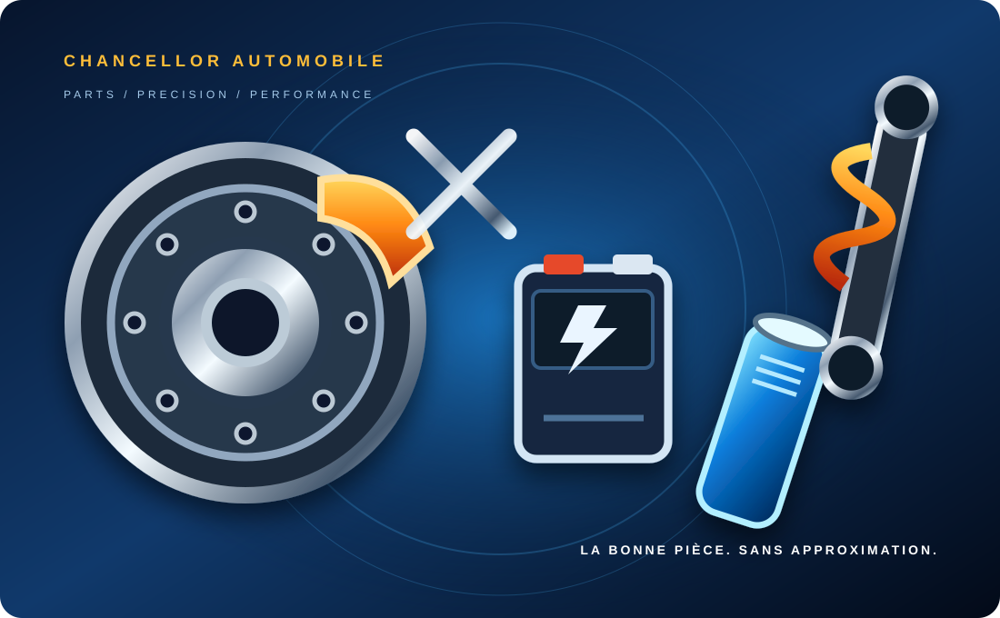

Moteur & filtration
Filtres, courroies, lubrification, refroidissement et composants moteur.
Recherchez par famille de pièces, identifiez votre véhicule et transmettez les informations utiles pour vérifier la bonne référence.

Choisissez une catégorie ou utilisez la recherche pour préparer votre demande.
Filtres, courroies, lubrification, refroidissement et composants moteur.
Plaquettes, disques, étriers et composants du système de freinage.
Amortisseurs, rotules, triangles, biellettes et liaison au sol.
Batteries, alternateurs, démarreurs, éclairage et équipements électriques.
Embrayage, transmission, cardans et composants de boîte de vitesses.
Rétroviseurs, optiques, éléments de carrosserie et accessoires extérieurs.
Autoradios, caméras, capteurs et équipements automobiles.
Pneumatiques, jantes et éléments associés selon les dimensions requises.
Éléments d'intérieur, commandes, vitrages et accessoires d'habitacle.
Éléments de ligne d'échappement, sondes et capteurs associés.
Aucune catégorie ne correspond à cette recherche.
Renseignez la marque, le modèle et l'année pour faciliter l'identification. Le numéro de châssis ou la référence OEM peuvent être demandés en complément.
La compatibilité exacte est confirmée avec les références techniques du véhicule.
Plus vous donnez de détails, plus notre recherche peut être précise.
Les champs marqués * sont obligatoires.